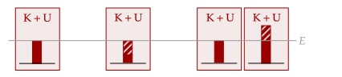
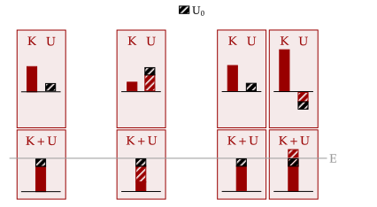

We've shown that only conservative forces have a corresponding potential energy function related to it. More generally, any negative work done by a conservative force is equal to that of the change of potential energy.
By the work-energy theorem, the net work is the change in kinetic energy. Thus, if the only work done on the object is by conservative forces, we have this equation.
Thus, if we add them together, the work cancels out, giving us what we want.
If we break the change in kinetic and potential energy, we have the following.
This means that the sum of the kinetic and potential energy of a system is constant. Right now, this works; however, we can streamline it to make it even better if we make a new term to indicate this sum. That way, we can write it out all in terms of one variable.
Thus, we define the sum of the kinetic and potential energy of a system to be equal to the mechanical energy.
With this definition, we can write out the equation we have constructed cleanly as shown below. This is a part of the Law of Conservation of Energy, which is widespread all throughout physics. Here, we have found a part of it.
We can interpret this result as the following: the mechanical energy of a system, where the only work done on it is by conservative forces, will remain constant.
Note the caveat here that the mechanical energy of a system is only conserved when the work is done only be non-conservative forces. Thus, we still have some work cut-out for us in fully generalizing this law. However, this law is already powerful as-is in this form.
Question 1
(LSM CQ8.9) An external force acts on a particle during a trip from one point to another and back to that same point. This particle is only affected by conservative forces. Does this particle’s kinetic energy and potential energy change as a result of this trip?
Solution
If the only work is being done by conservative forces and the object goes in a closed loop, then the total work done is zero; thus, there is no change in kinetic energy by the work-energy theorem. Likewise, by the definition of potential energy, there is no change in that either. Overall, there is no change.
Question 2
(HRK Q12.9) The total mechanical energy of a certain isolated system of particles remains constant. If the individual kinetic energies of the particles are also constant, then what can be concluded about the forces that act in this system?
Solution
If the kinetic energy of the particles don't change, it means that there is no net work done on the system.
To see this law in action, let's analyze a familiar scenario in action, being that of projectile motion. To make the calculations clear, let's set the initial position at the origin.

We first note the kinetic energy of the object. From our previous study, we know that the minimum speed of the projectile is at the top; this is where the vertical velocity is zero, and since the horizontal velocity is constant, the speed must be minimum at the top.
Likewise, the maximum kinetic energy occurs at the beginning and at the end, where the vertical velocity is at its maximum and minimum. Further, if the object continues downward below the initial height, the kinetic energy will continue to go higher and higher.
To visualize the conservation of mechanical energy, we will draw tiny bars at the bottom row. The higher the bar, the higher the value; further, this allows us to account for negative values, via drawing the bar below the desginated line. Thus, the kinetic energy for each position is shown below.

Now, the potential energy. Since the only force acting on the object is its weight, it is the net work. We've shown it is conservative; thus, it has a potential energy function. We solve for it via recalling the definition of the potential energy that it is the negative work done by conservative force.
Notice that the x-coordinate of the final position does not matter; in fact, the only thing that matters is the displacement from the initial position (which we've set at the origin for convenience). Thus, we can write out the equation as the following, keeping the potential energy at the initial position zero.
This is sometimes called the gravitational potential energy of a system. Notice how this is a function of the vertical position of the object; this is why we chose to draw where the object is at certain heights. Also note that this allows for the potential energy function to be negative.
Thus, drawing the bars for the potential energy, since we've set the initial potential energy at the ground to be zero, the potential energy at the two ground-positions are zero. The potential energy at the peak is positive, since it is a positive displacement from the ground, while the potential energy at the dropoff is negative as it is a negative displacement from the ground.
Once again, since the only work being done is by weight, which is conservative, this means that adding both the kinetic and potential energy for any position must remain constant; the change in mechanical energy is zero. We can see that if we add and subtract the bars, it all is constant.

Notice how this property, the mechanical energy being constant, applies for the entire flight, and not just between two positions; in other words, if we can find out the mechanical energy at one point in the flight, we can get properties of the object throughout any position during its flight (such as its speed or height).
One thing to notice is that our choice of what the value of the initial potential energy is does not change this result. If we add back the term into the gravitational potential energy, we have this function.
Visually, this is the same as just adding an arbitrary value to each of the bars in the potential energy. Eitherway, it doesn't matter; adding a value to everything just changes the already constant mechanical energy. It still remains constant! Thus, we can just choose the initial potential energy as any value that we please. Usually, it is zero.

Exercise 1a
A 1.00kg projectile is fired at an initial speed of 7.07m/s, being launched horizontally and vertically at 5.0m/s. It reaches a maximum height of 1.28m. Show that the mechanical energy at the peak and at the initial position is equal. Notice that the choice of where the potential energy is zero is irrelevant.
Solution
We set the coordinate system such that the initial position is at the origin. Let's write out the conservation of mechanical energy, noting that the only work done is by weight which is conservative, meaning that mechanical energy is conserved.
Now, we substitute in the final potential energy for the potential energy function for weight and the definitions of the kinetic energy. At the peak, the only speed is horizontal.
Notice how the initial potential energy cancelled out; this shows that whatever we would've chosen, it wouldn't matter. Now, we just substitute in.
Thus, it has been shown that the mechanical energy is equal at these two positions.
Exercise 1b
What is the speed of the object as it reaches a height of 1.00m?
Solution
We keep the same coordinate system where the initial position is at the origin. Now, we write out the conservation of energy again.
Notice that the mass disappears; this makes sense, because we could've solved this using kinematics, where mass isn't needed. We are solving for the final speed, so let's isolate that.
Now we just substitute.